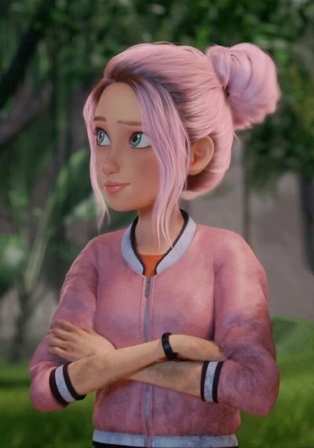
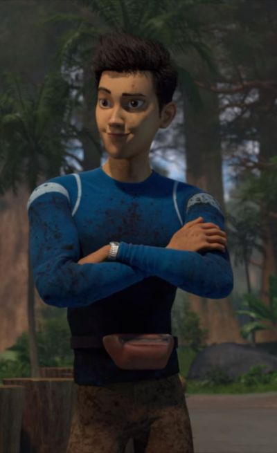
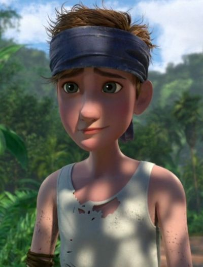
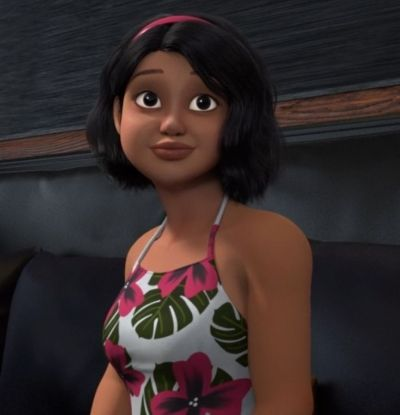

Darius is a huge dinosaur fan who knows a lot about the park and the animals that live there. Because of his knowledge and quick thinking, he often becomes the leader of the group. He cares deeply about his friends and always tries to find ways to keep everyone safe.

Brooklyn
Brooklynn is a social media influencer who loves to record and share her experiences. At first she focuses a lot on getting good footage, but she quickly realizes survival is more important. She proves to be brave, curious, and loyal to her friends.

Kenji Kon
Kenji comes from a very rich family and sometimes acts confident or a little spoiled. Even though he jokes around and tries to act cool, he cares about the group. Over time he grows more responsible and shows that he is willing to help protect his friends.
Yasmina "Yaz" Fadoula
Yaz is a competitive athlete who is very fast and determined. She is serious and focused, especially when the group needs to escape danger. Although she can seem tough at first, she becomes very protective and supportive of her friends.

Ben Pincus
Ben starts out as the most nervous member of the group and is easily scared. After being separated from the others for a while, he learns how to survive on his own. This experience makes him much braver and stronger.

Sammy Gutierrez
Sammy is friendly, energetic, and loves animals because of her ranch background. At first she hides an important secret from the group, which causes some trust issues. Later she proves that she is loyal and truly cares about her friends' safety.